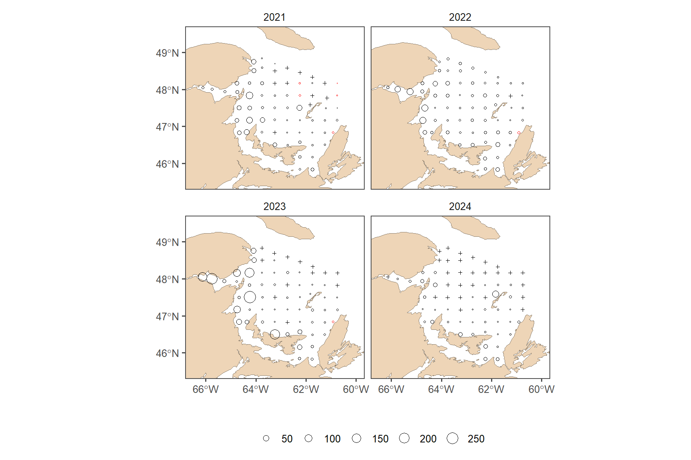
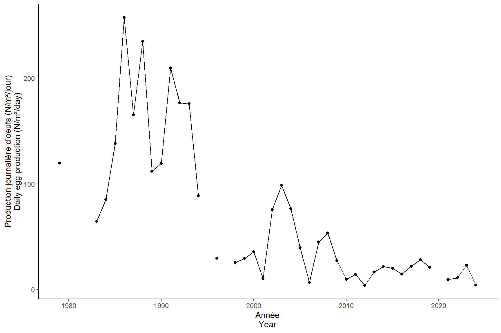

Read
2025-01-31
##### my packages ################################################################################
## CRAN
cran.packages <- c('tidyverse','boot','magrittr','ggpmisc','ggpubr','ggthemes','mgcv',
'fields', 'inlabru', 'sf', 'PresenceAbsence', 'verification', 'raster',
'scales', 'nlme','nls.multstart', 'stringr', 'ggforce',"readxl", "marmap")
install.this <- cran.packages[!(cran.packages %in% utils::installed.packages()[,"Package"])]
if(length(install.this)>=1) install.packages(install.this)
dummy <- lapply(cran.packages, require, character.only = TRUE)
## github
git.packages <- c('catchR','DFOdata','CCAM', 'INLA')
install.this <- git.packages[!(git.packages %in% utils::installed.packages()[,"Package"])]
if('catchR' %in% install.this) devtools::install_github("iml-assess/catchR@eli_parallel")
if('DFOdata' %in% install.this) devtools::install_github("iml-assess/DFOdata")
if('CCAM' %in% install.this) devtools::install_github("elisvb/CCAM")
if('INLA' %in% install.this)install.packages("INLA",repos=c(getOption("repos"),INLA="https://inla.r-inla-download.org/R/stable"), dep=TRUE)
dummy <- lapply(git.packages, require, character.only = TRUE)
##### source R directory ############################################################################
#invisible(sapply(list.files(pattern="[.]R$", path="R/", full.names=TRUE), source))
##### my ggplot theme ################################################################################
theme_set(theme_mackerel()) # theme_mackerel from catchR
update_geom_defaults("line", list(size = 1)) # no idea why somethimes I get fat lines otherwise
##### passwords databases #############################################################################
source("../../bdOracle.R")
source(paste0("utils/basemap.R")) #if error "plot new has not been call", restart R, package compatibility issues
source(paste0("utils/mackerel_fun_incubation.R")) # Mackerel incubation .
source(paste0("utils/spatial_projections.R"))#
source(paste0("utils/extract_biochem.R"))
source(paste0("utils/extract_T0_10.R"))
source(paste0("INLA/Mesh.R"))
source(paste0("INLA/INLA_ZAG_covar_Stations.R"))
source(paste0("INLA/INLA_ZAG_covar_Stations_CV.R"))
source(paste0("utils/nlme_boot.R"))
source(paste0("INLA/INLA_tw_covar_Stations.R"))
source(paste0("INLA/INLA_tw_covar_Stations_CV.R"))
source(paste0('INLA/plotSpatialFieldCL.R'))
source(paste0('INLA/plotSmoother.R'))
source(paste0('INLA/model_validation.R'))
source(paste0('INLA/get_prediction_grid.R'))
source(paste0('../biochem/PL_Get_SampleID_Batch.R'))
source(paste0('../biochem/PL_Get_Counts_Batch.R'))
source(paste0('../biochem/PL_Read_Filter.R'))
source(paste0('../biochem/PL_Taxonomic_Grouping.R'))
log10p1_trans = function() scales::trans_new("log10p1", transform=function(x) log10(x+1), inverse=function(x) (10^x)-1)#inverse function is necessary for legend
#source(paste0("R/",year_to_report,"/INLA/getvar.R")) # needs to be retought1 DEP
1.1 INLA Mesh
###INLA mesh###
setwd(rprojroot::find_rstudio_root_file())
load(file=paste0("data/",my.year,"/eggt1.RData"))
loc_egg1 <- make_boundary(dat = eggt1, year=my.year, trajet = 1)
## Deleting source `data/2024/INLA/prediction_grid_area2024_trajet1.shp' using driver `ESRI Shapefile'
## Writing layer `prediction_grid_area2024_trajet1' to data source `data/2024/INLA/prediction_grid_area2024_trajet1.shp' using driver `ESRI Shapefile'
## Writing 1 features with 0 fields and geometry type Polygon.
make_mesh(range = 150, Loc = loc_egg1, year=my.year, trajet = 1)
## Reading layer `prediction_grid_area2024_trajet1' from data source `C:\LEHOUX\Maquereau\iml-mackerel\03.0_egg-index\data\2024\INLA\prediction_grid_area2024_trajet1.shp' using driver `ESRI Shapefile'
## Simple feature collection with 1 feature and 1 field
## Geometry type: POLYGON
## Dimension: XY
## Bounding box: xmin: 154156.8 ymin: 207793.2 xmax: 606003.4 ymax: 569285.9
## Projected CRS: NAD83 / Quebec Lambert
# prediction grid for INLA
predstation <- expand_grid(distinct(eggt1 %>% dplyr::select(year)), eggt1 %>% group_by(station) %>% dplyr::summarise(x = mean(longitude, na.rm = T), y = mean(latitude, na.rm = T)) %>% mutate(station = as.factor(station))) %>%
st_as_sf(coords=c("x", "y"), crs=4326, remove=F) %>% st_transform(lcc)
predstation<- bind_cols(predstation, st_coordinates(predstation) %>% as.data.frame() %>% dplyr::rename(X.m=X, Y.m=Y)) %>% st_drop_geometry()
saveRDS(predstation, paste0("data/",my.year,"/INLA/prediction_grid_station", my.year, ".RDS"))
1.2 Spatial field
setwd(rprojroot::find_rstudio_root_file())
if(new) INLA_ZAG(dat = eggt1, res_mesh = 150, res_pred = "station", year=my.year, Rvar = "DEP", trajet = 1)
res_mesh = 150
res_pred = "station"
myfamily = "ZAG"
minw = -10
maxw = 10
smoother = F
Rvar = "DEP"
trajet=1
name = paste0(Rvar, "_INLA_mesh", res_mesh,"km_pred_",res_pred,"_",myfamily,my.year,"_trajet",trajet)
#extract predictions#
get_prediction_grid(dir=paste0("results/",my.year,"/INLA/"), dir.out=paste0("results/",my.year,"/INLA/predictions/"),name=name, trans="")
#plot random field#
spfield<- plotSpatialFieldCL(dir=paste0("results/",my.year,"/INLA/"),name=name ,minw=minw, maxw=maxw, my.year=my.year)
annotate_figure(spfield[[1]], "Bernouilli")
annotate_figure(spfield[[2]],"Gamma")
1.3 Coefficients
setwd(rprojroot::find_rstudio_root_file())
plotSmoother(dir=paste0("results/",my.year,"/INLA/"),name=name, subfamily="binomial",smoother=smoother)
plotSmoother(dir=paste0("results/",my.year,"/INLA/"),name=name, subfamily="gamma",smoother=smoother)
fixed_effect1 <- read.delim(paste0("results/",my.year,"/INLA/fixed_effects_",name,"binomial", ".txt"))
kable(fixed_effect1, caption="fixed effect Bernoulli model")| mean | sd | X0.025quant | X0.975quant | |
|---|---|---|---|---|
| Intercept | 7.7748510 | 4.178556 | -0.6725828 | 15.7726494 |
| station1.1 | -2.5859806 | 4.179659 | -10.6895714 | 5.7209217 |
| station1.2 | -3.9511944 | 4.155300 | -11.9805371 | 4.3429238 |
| station1.3 | -8.0695789 | 4.212258 | -16.1304322 | 0.4491027 |
| station1.4 | -10.0715877 | 4.275559 | -18.2108949 | -1.3601545 |
| station1.5 | -10.9087531 | 4.327948 | -19.1222600 | -2.0496649 |
| station10.1 | 27.6050019 | 14.066004 | -3.1372389 | 53.1904513 |
| station11.1 | 27.3774863 | 13.999393 | -3.1294736 | 52.8900344 |
| station12.1 | -0.5617201 | 4.231942 | -8.8413488 | 7.7566525 |
| station2.1 | -1.2049523 | 4.183705 | -9.3589190 | 7.0562910 |
| station2.2 | -1.5432026 | 4.199943 | -9.7065875 | 6.7778058 |
| station2.3 | -5.0059467 | 4.156772 | -13.0136853 | 3.3244043 |
| station2.4 | -6.1991399 | 4.172474 | -14.2154212 | 2.1931299 |
| station2.5 | -8.3103930 | 4.211288 | -16.3662312 | 0.2108905 |
| station2.6 | -10.0829561 | 4.271107 | -18.2137396 | -1.3805608 |
| station3.1 | -2.0518104 | 4.156482 | -10.1456628 | 6.1643715 |
| station3.2 | -2.2390924 | 4.146604 | -10.3051940 | 5.9679704 |
| station3.3 | -1.2471370 | 4.206762 | -9.4375321 | 7.0700251 |
| station3.4 | -3.5498813 | 4.138636 | -11.5627340 | 4.6900018 |
| station3.5 | -2.8438908 | 4.156959 | -10.8904761 | 5.4346329 |
| station3.6 | -6.2941260 | 4.182047 | -14.3171682 | 2.1340027 |
| station3.7 | -7.3509010 | 4.193139 | -15.3866803 | 1.1120914 |
| station3.8 | -9.6825527 | 4.247708 | -17.7840128 | -1.0515090 |
| station3.9 | -10.1739817 | 4.274440 | -18.3146226 | -1.4701557 |
| station4.1 | -2.0553308 | 4.144961 | -10.1315348 | 6.1319342 |
| station4.2 | -2.1765911 | 4.143543 | -10.2415334 | 6.0182871 |
| station4.3 | -1.2721414 | 4.214999 | -9.4727072 | 7.0685693 |
| station4.4 | -1.3245365 | 4.179893 | -9.4615902 | 6.9403537 |
| station4.5 | -3.2302012 | 4.151667 | -11.2565829 | 5.0510196 |
| station4.6 | -6.0937769 | 4.177011 | -14.1131679 | 2.3157064 |
| station4.7 | -6.7861195 | 4.188815 | -14.8169865 | 1.6631638 |
| station4.8 | -8.2114769 | 4.214730 | -16.2697970 | 0.3226365 |
| station4.9 | -10.2917477 | 4.270714 | -18.4271555 | -1.5983762 |
| station5.1 | 28.0951577 | 14.422754 | -3.5191108 | 54.2761586 |
| station5.2 | -4.4253960 | 4.160065 | -12.4455463 | 3.9034244 |
| station5.3 | -4.1219491 | 4.155322 | -12.1380293 | 4.1901885 |
| station5.4 | -4.5761348 | 4.161597 | -12.5900652 | 3.7681436 |
| station5.5 | -5.7529817 | 4.170245 | -13.7668285 | 2.6321559 |
| station5.6 | -6.6500642 | 4.183720 | -14.6761465 | 1.7817370 |
| station5.7 | -8.5964969 | 4.220078 | -16.6659146 | -0.0525724 |
| station6.1 | -1.1860450 | 4.157755 | -9.3020285 | 7.0084294 |
| station6.2 | -2.5302408 | 4.139847 | -10.5715954 | 5.6778311 |
| station6.3 | -3.1531301 | 4.177093 | -11.2196375 | 5.1914171 |
| station6.4 | -4.6579563 | 4.148474 | -12.6608320 | 3.6405133 |
| station6.5 | -4.6263386 | 4.158631 | -12.6374174 | 3.7080574 |
| station6.6 | -4.3459297 | 4.157440 | -12.3574852 | 3.9821579 |
| station6.7 | -6.5081518 | 4.178307 | -14.5324363 | 1.9003822 |
| station6.8 | -8.2592562 | 4.256165 | -16.4080188 | 0.3430604 |
| station7.1 | 27.7805258 | 14.109072 | -3.0449097 | 53.4440978 |
| station7.2 | 26.7341987 | 13.458025 | -2.1832665 | 51.4648220 |
| station7.3 | -2.0456441 | 4.200247 | -10.1786959 | 6.3159072 |
| station7.4 | -2.8827820 | 4.165244 | -10.9397721 | 5.4199940 |
| station7.5 | -3.9713657 | 4.149129 | -11.9832124 | 4.3178819 |
| station7.6 | -5.5652089 | 4.166323 | -13.5818368 | 2.7974946 |
| station7.7 | -6.9014091 | 4.187845 | -14.9445166 | 1.5258718 |
| station8.1 | -2.6023694 | 4.135309 | -10.6496291 | 5.5784888 |
| station8.2 | 27.4302170 | 13.899259 | -2.7959247 | 52.7855915 |
| station8.3 | -0.7587369 | 4.232757 | -8.9965352 | 7.6137868 |
| station8.4 | 26.4395071 | 13.325306 | -2.1246435 | 50.9653666 |
| station8.5 | 26.8761470 | 13.525573 | -2.3490237 | 51.6485537 |
| station8.6 | -4.7301088 | 4.160334 | -12.7488870 | 3.6015567 |
| station8.7 | -5.5136298 | 4.169614 | -13.5422182 | 2.8479167 |
| station9.1 | -2.2830399 | 4.156236 | -10.3666621 | 5.9445469 |
| station9.2 | 27.6758281 | 14.057957 | -3.0053592 | 53.2645714 |
| station9.3 | 27.3749642 | 13.870559 | -2.7997032 | 52.6739732 |
| station9.4 | -2.4325383 | 4.146508 | -10.4900956 | 5.7849287 |
| station9.5 | -1.2534745 | 4.189335 | -9.4174296 | 7.0200504 |
fixed_effect2 <- read.delim(paste0("results/",my.year,"/INLA/fixed_effects_",name,"gamma", ".txt"))
kable(fixed_effect2, caption="fixed effect Gamma model")| mean | sd | X0.025quant | X0.975quant | |
|---|---|---|---|---|
| Intercept | 2.0772409 | 3.866388 | -5.504363 | 9.658844 |
| station1.1 | -0.3332040 | 3.877683 | -7.936954 | 7.270552 |
| station1.2 | -0.4430456 | 3.875853 | -8.043200 | 7.157126 |
| station1.3 | -2.1321703 | 3.884790 | -9.749852 | 5.485525 |
| station1.4 | -3.4202591 | 3.907872 | -11.083207 | 4.242693 |
| station1.5 | -4.8875297 | 3.924355 | -12.582807 | 2.807736 |
| station10.1 | 1.4169375 | 3.874838 | -6.181232 | 9.015115 |
| station11.1 | 2.4384267 | 3.877093 | -5.164161 | 10.041027 |
| station12.1 | 0.5778017 | 3.880954 | -7.032371 | 8.187959 |
| station2.1 | -0.2080613 | 3.875103 | -7.806749 | 7.390638 |
| station2.2 | -0.7098171 | 3.873974 | -8.306290 | 6.886667 |
| station2.3 | -0.9772313 | 3.874552 | -8.574839 | 6.620384 |
| station2.4 | -2.1495986 | 3.876212 | -9.750467 | 5.451269 |
| station2.5 | -2.6042186 | 3.883504 | -10.219390 | 5.010944 |
| station2.6 | -3.1240496 | 3.899730 | -10.771019 | 4.522950 |
| station3.1 | 0.8693661 | 3.877869 | -6.734742 | 8.473492 |
| station3.2 | 0.0619530 | 3.875626 | -7.537761 | 7.661675 |
| station3.3 | 0.1775919 | 3.873865 | -7.418668 | 7.773861 |
| station3.4 | -0.6052521 | 3.872721 | -8.199269 | 6.988774 |
| station3.5 | -0.7876600 | 3.872213 | -8.380685 | 6.805366 |
| station3.6 | -1.2422606 | 3.876084 | -8.842880 | 6.358353 |
| station3.7 | -1.3017747 | 3.881163 | -8.912352 | 6.308800 |
| station3.8 | -2.5354628 | 3.893706 | -10.170640 | 5.099704 |
| station3.9 | -3.9952411 | 3.903978 | -11.650567 | 3.660062 |
| station4.1 | -0.0341452 | 3.877426 | -7.637391 | 7.569107 |
| station4.2 | 0.8939494 | 3.875508 | -6.705533 | 8.493440 |
| station4.3 | 1.3042033 | 3.873464 | -6.291272 | 8.899686 |
| station4.4 | -0.3200055 | 3.872059 | -7.912726 | 7.272723 |
| station4.5 | -0.3163861 | 3.872267 | -7.909519 | 7.276743 |
| station4.6 | 0.7475804 | 3.874970 | -6.850856 | 8.346006 |
| station4.7 | -0.0792783 | 3.876206 | -7.680139 | 7.521573 |
| station4.8 | -1.3921771 | 3.881676 | -9.003764 | 6.219397 |
| station4.9 | -3.6452672 | 3.899073 | -11.290968 | 4.000425 |
| station5.1 | 0.7885311 | 3.873281 | -6.806587 | 8.383652 |
| station5.2 | 0.8098053 | 3.872794 | -6.784359 | 8.403973 |
| station5.3 | 0.6727056 | 3.872623 | -6.921127 | 8.266532 |
| station5.4 | 0.8960998 | 3.872523 | -6.697536 | 8.489732 |
| station5.5 | 1.2452756 | 3.873850 | -6.350960 | 8.841510 |
| station5.6 | -0.4130238 | 3.876616 | -8.014691 | 7.188629 |
| station5.7 | -2.2981114 | 3.882796 | -9.911896 | 5.315660 |
| station6.1 | 1.3063170 | 3.874580 | -6.291348 | 8.903985 |
| station6.2 | 1.0232791 | 3.872446 | -6.570201 | 8.616764 |
| station6.3 | 1.1387309 | 3.872475 | -6.454807 | 8.732270 |
| station6.4 | 1.2792338 | 3.872813 | -6.314972 | 8.873435 |
| station6.5 | 1.2723406 | 3.872971 | -6.322172 | 8.866850 |
| station6.6 | 0.5776754 | 3.873536 | -7.017949 | 8.173291 |
| station6.7 | -0.9760439 | 3.878686 | -8.581769 | 6.629669 |
| station6.8 | -2.1824602 | 3.912805 | -9.855089 | 5.490157 |
| station7.1 | 1.9260193 | 3.873102 | -5.668745 | 9.520792 |
| station7.2 | 1.9110443 | 3.872391 | -5.682329 | 9.504421 |
| station7.3 | 1.8493964 | 3.871971 | -5.743152 | 9.441948 |
| station7.4 | 1.8663391 | 3.872917 | -5.728068 | 9.460745 |
| station7.5 | 1.4091865 | 3.873361 | -6.186089 | 9.004463 |
| station7.6 | 0.0772050 | 3.876051 | -7.523350 | 7.677752 |
| station7.7 | -1.9888546 | 3.881716 | -9.600522 | 5.622797 |
| station8.1 | 0.1945772 | 3.875570 | -7.405030 | 7.794187 |
| station8.2 | 1.8541308 | 3.873089 | -5.740608 | 9.448880 |
| station8.3 | 2.4411398 | 3.872794 | -5.153022 | 10.035306 |
| station8.4 | 2.5692116 | 3.872727 | -5.024817 | 10.163250 |
| station8.5 | 2.1267991 | 3.872926 | -5.467621 | 9.721227 |
| station8.6 | 0.7732353 | 3.875585 | -6.826403 | 8.372872 |
| station8.7 | -0.2567864 | 3.878961 | -7.863050 | 7.349467 |
| station9.1 | 1.1442412 | 3.876044 | -6.456296 | 8.744781 |
| station9.2 | 1.4716619 | 3.874291 | -6.125436 | 9.068765 |
| station9.3 | 2.6798184 | 3.873451 | -4.915629 | 10.275278 |
| station9.4 | 1.4406314 | 3.873987 | -6.155870 | 9.037139 |
| station9.5 | 2.2041760 | 3.874461 | -5.393255 | 9.801612 |
1.4 Range
setwd(rprojroot::find_rstudio_root_file())
rbern<- myrange(dir=paste0("results/",my.year,"/INLA/"),name=name, subfamily="binomial")
kable(rbern, caption="Range for the Bernoulli model")| x |
|---|
| Kappa=1.2e-05 |
| sigmau=2.519 |
| range (km)=239.132 |
| erreur around range (km)=180.894-300.428 |
rgamma<- myrange(dir=paste0("results/",my.year,"/INLA/"),name=name, subfamily="gamma")
kable(rgamma, caption="Range for the Gamma model")| x |
|---|
| Kappa=1.46e-05 |
| sigmau=1.583 |
| range (km)=195.064 |
| erreur around range (km)=168.113-222.908 |
1.5 Validation
setwd(rprojroot::find_rstudio_root_file())
validation_ZAG(dir=paste0("results/",my.year,"/INLA/"),name=name,
rvarpos=2, varpos=5)
1.6 INLA cross-validation
setwd(rprojroot::find_rstudio_root_file())
load(file=paste0("data/",my.year,"/INLA/INLA_CV_eggdata.RData"))
#do not need to do every year.
if(new) INLA_ZAG_CV(dat = eggcv_all , res_mesh = 150, res_pred = "station", trajet = 1, year=my.year, Rvar="DEP")
# to get result use summary fitted values
load(paste0("results/",my.year,"/INLA/DEP_INLA_mesh150km_pred_station_ZAG_",my.year,"_CV_trajet1.RData"))
# Extract mean from fitted values
idb.prd <- inla.stack.index(stkallBern, "BernFit")$data
Pi <- Gbern$summary.fitted.values$mean[idb.prd] # il n'y a pas d'index pour prediction, j'ai setté à NA.
# sd.prd <- I$summary.fitted.values$sd[id.prd]
mu <- Ggamma$summary.fitted.values$mean[idb.prd]
eggcv_all$Fit <- Pi * mu
my.formula <- y ~ x # for smooth in ggplot
inlastation1 <- eggcv_all %>%
ungroup() %>%
filter(!sample_id %in% eggcv_to_fit$sample_id) %>%
dplyr::rename(inlastation = Fit) %>%
dplyr::select(sample_id, inlastation)
pcv <- full_join(eggt1 %>% dplyr::select(sample_id, year, DEP) %>% filter(sample_id %in% inlastation1$sample_id), inlastation1) %>%
ggplot(aes(x = DEP, y = inlastation)) +
geom_point() +
geom_smooth(method = "lm") +
basetheme+
stat_poly_eq(
formula = my.formula,
aes(label = paste(after_stat(eq.label), after_stat(rr.label), sep = "~~~")),
parse = TRUE, vstep = 0.08
) +geom_abline(slope=1, intercept=0, col="red", lty=2)
##attention il faut sauvegarder eggcv pour que cette figure soit reproductible.
mybreaks=c(0,10,30,100,300,1000,2000)
pcv + scale_x_continuous(name = "PJO calculées (N/m²/day) | Calculated DEP (N/m²/day)", trans = "log10p1", breaks=mybreaks) + scale_y_continuous(name = "PJO prédite (N/m²/day)\nPredicted DEP (N/m²/day)", trans = "log10p1", breaks=mybreaks)
1.7 DEP MAPs
predt1 <- read.delim(paste0(root,"results/",my.year,"/INLA/predictions/predictions_DEP_INLA_mesh150km_pred_station_ZAG", my.year, "_trajet1.txt"))
lookup <- read.delim(paste0(root,"data/lookup_station_egg.txt"))
DEPt1a <- full_join(eggt1 %>% mutate(station=as.numeric(station),
stratum=as.numeric(stratum)), left_join(predt1, lookup %>% dplyr::select(-c(depth, latitude, longitude)))) %>% mutate(DEP = coalesce(DEPbackup, Fit))
DEP <- full_join(lookup %>% dplyr::rename(lat=latitude, lon=longitude) %>% dplyr::select(station, lat, lon),
DEPt1a %>% mutate(estimated = ifelse(is.na(DEPbackup) & !is.na(DEP), "estimated", "observed"))) %>%
mutate(latitude=coalesce(latitude, lat),
longitude=coalesce(longitude,lon))
year_to_plot= (my.year-4) : my.year
basemap2 +
geom_point(data = DEP %>% filter(year %in% year_to_plot,DEP > 0), aes(x = longitude, y = latitude, size = DEP, col = estimated), shape = 21, stroke=0.5) +
geom_point(data = DEP %>% filter(year %in% year_to_plot,DEP == 0), aes(x = longitude, y = latitude), shape = 3, size=0.8, stroke=0.5) +
facet_wrap(~year) +
scale_color_manual(values = c("red", "black"), guide = "none") +
theme_few()+ theme(legend.position="bottom", plot.background = element_blank())+
scale_x_continuous(breaks=seq(-66,-60,2))+
scale_size_continuous(name="",breaks=c(seq(0, ceiling(max(DEP$DEP)), 50)),range=c(0.25,5)) 
ggsave(paste0(root,"img/",my.year,"/DEP.png"), width=4, height=4.8, dpi=600, units="in")
save(DEP, file=paste0(root,"data/",my.year,"/DEP.RData"))
all_years= data.frame(year=seq(1979, my.year, 1))
left_join(all_years,DEP) %>%
group_by(year) %>%
dplyr::summarize(
DEP.p = mean(DEP, na.rm = T)) %>%
ggplot(aes(x=year, y=DEP.p)) +geom_point()+geom_line() +
ylab("Production journalière d'oeufs (N/m²/jour)\nDaily egg production (N/m²/day)")+
xlab("Ann\u00E9e\nYear")
ggsave(paste0(root,"img/",my.year,"/DEP_trajet1_year.png"),width = 6, height = 4, unit = "in", dpi = 600)